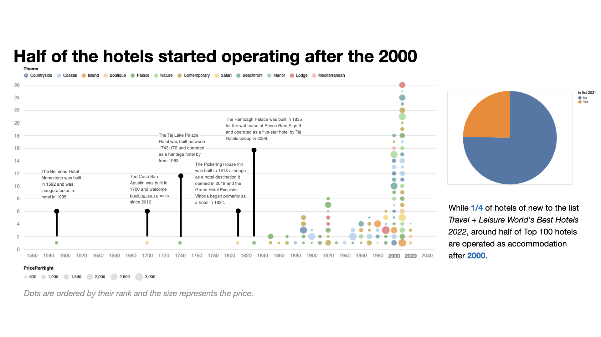

Evie Lai's Portfolio
Top 100 Hotels Worldwide
June 1, 2025
The “Travel+Leisure World's Best 100 Hotels 2022” is a comprehensive data analysis and visualization project aimed at identifying the highest-rated hotels across continents based on online reviews, price tiers, and geographic locations.
Motivation
Stay-cation became popular during COVID, where travelers choose premium local hotels to simulate a travel experience. Our project aims to assist hotel-oriented travelers by analyzing the Travel + Leisure World's Best Hotels 2022 list.
Target
- Visualize the locations and features of the top 100 hotels.
- Compare pricing variability among top-ranked hotels.
- Analyze customer feedback and sentiment versus ranking.
- Explore how hotel attributes relate to their rankings.
Data Sources
- Travel+Leisure World's Best 100 Hotels 2022: Kaggle dataset
- Reviews & Ratings: TripAdvisor.com via Scrapfly API
- Additional Hotels: Non-top 100 hotels for baseline comparison
Methodology
- Scraping and merging data from TripAdvisor.
- Handling missing prices and averaging multi-night data.
- Manual augmentation using hotel websites for missing info.
- Text extraction from descriptions and review sentiment via SpacyTextBlob.
- Bootstrap sentiment scoring and correlation analysis.
Analysis Highlights
- Map visualizations and price-size-country dot plots.
- Correlation matrix for score, size, price, rating, and sentiment.
- WordClouds to summarize key themes in descriptions.
- Sentiment comparison between top 100 and random hotels.
Key Findings
Click to enlarge:

Future Work
- Standardize prices over a fixed stay window.
- Refine reviews selection based on language and time.
- Better amenities coverage via improved source merging.
- Encode categorical variables and normalize values for more robust correlation.
Visualization Showcase
Includes interactive maps, ratings vs. pricing scatterplots, and filterable dashboards.
🔗 Click here to view the full notebook